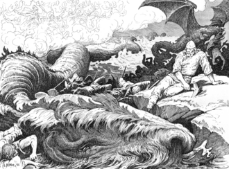

The Monster of Norse
Via Wikipedia — "Jörmungandr"; image license per its Wikimedia Commons file page
Jörmungandr
The name Jörmungandr is a compound of the Old Norse words 'jǫrmun' (meaning 'huge', 'immense', or 'mighty', and also a poetic term for the god Odin) and 'gandr' (meaning 'snake', 'serpent', or 'monster', but also a term for a magical staff or wand). Thus, the name can be translated as 'The Huge Monster' or 'The Mighty Serpent'. The alternative name, Miðgarðsormr, translates directly as 'worm/serpent of Midgard', referring to the serpent's role in encircling the realm of humanity.
Norse (Old Norse) mythology, specifically the medieval Icelandic literary tradition as recorded in the Poetic Edda and Prose Edda.
Some scholars have debated the relationship between Jörmungandr and other world-encircling serpents in Indo-European mythologies, such as the Vedic dragon Vritra or the Greek Ouroboros. While the concept of a world-encircling serpent is a common motif, Jörmungandr is a distinct figure within the Norse corpus, and direct genealogical links to other mythologies are speculative and not universally accepted. There is also scholarly discussion about whether the figure of Jörmungandr was a purely literary creation of the medieval period or had roots in earlier oral traditions, with some arguing for a possible connection to a Proto-Indo-European serpent myth.
Imagine the world as a great, flat disc, and around its edge, coiled like a serpent, lies a creature so vast that it holds the entire realm in its grasp, its own tail in its mouth. This is Jörmungandr, the World Serpent, a being of such immense scale that it is less a monster and more a fundamental part of the cosmos itself. He is the boundary, the threat, and the promise of an ending, a silent, slumbering giant in the deep, waiting for the day he can let go.
You're on a fishing boat in the North Sea.
You're on a fishing boat in the North Sea. Something massive passes beneath the hull — so massive it takes a full minute to go by. You look over the side. The water is clearer than it should be, impossibly deep, and at the bottom of that depth two eyes the size of moons look back at you, unblinking. You realize the horizon is moving. It's not the horizon. It's the curve of something so vast it encircles the entire world. And it just noticed you.
Jörmungandr, the Midgard Serpent or World Serpent, is one of the three monstrous children of Loki and the giantess Angrboða. He is a serpent of such mind-boggling size that he encircles the entire earth — Midgard — biting his own tail. When the Æsir first discovered this growing horror, Odin threw him into the ocean that surrounds all lands. But instead of drowning, Jörmungandr grew. And grew. Until he wrapped around the entire world and could hold his own tail in his mouth. He is the ouroboros made flesh, the boundary between order and chaos, the living wall that defines the human world.
Jörmungandr is not inherently malicious in the way his brother Fenrir is. He does not scheme or plot. He simply exists — vast, ancient, patient — waiting for the day he is fated to release his tail and rise from the ocean at Ragnarök. When that day comes, he will flood the world with his venom and face his eternal rival Thor in battle. Thor will kill him with Mjölnir. Jörmungandr will kill Thor with his poison. Neither will survive. This is not a grudge match — it is a cosmic necessity, written in the fabric of fate since before the world was made.
Jörmungandr is described as an unfathomably large sea serpent, so immense that it encircles the entire world of Midgard and grasps its own tail in its mouth. The Prose Edda describes him as a 'worm' (ormr), which in Old Norse could refer to any serpentine creature, from a small snake to a dragon. His size is the defining feature; he is a being of planetary scale, not a mere monster that could be encountered in a fjord. The physical description is largely left to the imagination, as the sources focus on his immense size and his role as a world-encircling force.
Jörmungandr is primarily a passive, cosmic force in the myths, dwelling in the world sea and holding the world together. His only notable behaviors are his interactions with Thor, where he is provoked into a rage, and his prophesied role at Ragnarök, where he will release his tail and emerge from the sea to battle the gods. He is not depicted as actively malicious in his daily existence, but as a primordial entity whose very presence is a fundamental part of the world's structure. He is a threat because of his potential to unleash destruction, not because of constant malevolent scheming.
Jörmungandr's domain is the world sea, the vast ocean that surrounds Midgard (the human world). He is the embodiment of the chaotic, untamed power of the sea and the boundary between the known world of humans and the unknown. His dwelling in the ocean makes him a chthonic and aquatic force, tied to the deep and the primal elements.
The primary symbol associated with Jörmungandr is the ouroboros, the serpent eating its own tail, which represents cyclicality, eternity, and the self-contained nature of the cosmos. He is also a symbol of the boundary, the encircling edge of the world, and the threat of chaos that lies just beyond the civilized order of Midgard.
Jörmungandr was born in Jotunheim to Loki and the giantess Angrboða, alongside his siblings Fenrir the wolf and Hel, the half-dead goddess of the underworld. When the gods learned of these three abominations — prophesied to play key roles in the destruction of the cosmos at Ragnarök — they took action. Fenrir was bound with a magical chain. Hel was thrown into Niflheim and made queen of the dishonorable dead. Jörmungandr was cast into the great ocean surrounding Midgard, where he grew until he could encircle the entire world.
Jörmungandr is of planetary scale, able to encircle the entire world and bite his own tail. This gives him unimaginable physical power, capable of causing world-ending destruction simply by moving.
His size is also his limitation; he is confined to the world sea, unable to easily move beyond it.
None noted in the sources.
The serpent is venomous, and his poison is potent enough to kill even the mighty Thor. At Ragnarök, Thor is said to take nine steps after their battle before succumbing to the serpent's poison.
The poison is a one-time use in the final battle, and the serpent himself is killed by Thor's hammer.
None noted.
By holding his tail, Jörmungandr forms a ring around Midgard, serving as a physical boundary for the world. When he releases his tail, it is a sign that the world is ending.
This is a passive ability; he is essentially a cosmic structure, not an active power he can wield.
None noted.
A serpent of literally planetary scale — his body is long enough to wrap around the Earth and bite his own tail. His scales are dark grey or black, barnacle-encrusted, and each one is the size of a small island. His eyes are enormous, pale, and unblinking like twin moons beneath the waves. His mouth is large enough to swallow mountains, and his venom is a black, viscous substance that can kill gods. When he moves, he creates tsunamis. When he surfaces, he eclipses the sky.
Planetary-scale size — his body encircles the entire world. Deadly venom that can kill even gods (this is what kills Thor). The ability to create earthquakes by releasing or tightening his grip on his own tail. He can generate massive floods and tsunamis. His sheer mass makes him virtually immune to conventional attack — only Mjölnir has ever harmed him. He can hold his breath indefinitely and move through the ocean at incredible speeds despite his size.
Jörmungandr is largely passive throughout Norse mythology. He does not attack humanity unprovoked or scheme against the gods. His most famous pre-Ragnarök appearance is when Thor fishes for him — the serpent takes the bait and the two have their first deadly confrontation, which ends when Thor's giant companion cuts the line in terror. The serpent simply sinks back beneath the waves, not pursuing or raging. His role is that of the patient destroyer — waiting, growing, knowing his moment will come. He is the embodiment of inevitable doom, not active malice.
He is fated to die to Mjölnir at Thor's hands. His venom, while deadly to others, cannot save him from a killing blow. His immense size means he is slow to react to small-scale threats. He is bound to his role — the narrative demands he fight Thor, and he cannot escape that fate. In some interpretations, his power is tied to remaining in the ocean; removing him would diminish him.
Jörmungandr is the middle child of Loki and the giantess Angrboða. Loki is a trickster god and a complex figure, often causing trouble for the gods.
This parentage is consistent across the main sources.
None, though the nature of Loki's involvement with Angrboða is not detailed.
Angrboða is a giantess (jötunn) who lives in Jötunheimr. She is the mother of three monstrous children: Fenrir the wolf, Hel the ruler of the underworld, and Jörmungandr.
The Prose Edda is the main source for her role as the mother.
None.
Thor is the thunder god and Jörmungandr's archenemy. Their feud is legendary, culminating in their mutual deaths at Ragnarök. Thor is the protector of Midgard, and Jörmungandr is the beast that encircles and threatens it.
This is the central relationship in the myths involving Jörmungandr.
None, the enmity is clear and consistent.
Fenrir is the great wolf, Jörmungandr's older brother. Fenrir is destined to kill Odin at Ragnarök, just as Jörmungandr will kill Thor.
Both are children of Loki and Angrboða.
None.
Hel is the ruler of the underworld, Jörmungandr's younger sister. She is a complex figure, half-living and half-dead.
Both are children of Loki and Angrboða.
None.
Odin is the one who casts Jörmungandr into the sea, inadvertently setting his role as the World Serpent. While not a direct enemy, Odin's action defines the serpent's existence.
Odin's action is the catalyst for Jörmungandr's role.
None.
☘ When Thor went fishing for Jörmungandr, he used an ox's head as bait and the serpent took it — the only time it was lured to the surface.
☘ Jörmungandr's venom is so potent that even the spray from its mouth can kill — Thor was struck by a single drop of its blood at Ragnarök.
☘ The serpent's name literally means 'huge monster' in Old Norse — 'Jörmun' (huge) + 'gandr' (monster/spirit).
☘ His sister Hel was born half-black and half-flesh-colored, half-living and half-corpse, and rules the dead who did not die in battle.
☘ The Norse believed earthquakes were caused by Jörmungandr shifting in the deep ocean, tightening or releasing his grip on his own tail.
The storm is getting closer. You can feel it in your teeth now. Thunder doesn't roll — it cracks, like the sky…
Video Game — Persona / Shin Megami Tensei series (Atlus / Sega). Based on mythological figures reinterpreted as demons/shadows in the Collective Unconscious.LokiLoki is a recurring high-level demon/Persona in the SMT/Persona franchise, representing chaos, trickery, and t…
NorseFenrirFenrir is the monstrous wolf of Norse mythology, the eldest child of the trickster god Loki and the giantess A…
NorseHelHel is the ruler of the underworld realm of Helheim, where most of the dead go (those who did not die in battl…
Beings of the same nature, imagined by other peoples.
This page is intentionally blank and ready for source-backed lore, versions, images, and connections.
Unclassified — research pendingMairuThis page is intentionally blank and ready for source-backed lore, versions, images, and connections.
NavajoSkinwalkerIt walks among you wearing the skin of your neighbor, your livestock, your child. In Navajo tradition, the Yee…
Unclassified — research pendingDrakaina SkythiaThis page is intentionally blank and ready for source-backed lore, versions, images, and connections.
The primary sources are limited to the medieval Icelandic texts. There is no direct archaeological or iconographic evidence for Jörmungandr from the Viking Age itself, though the ouroboros symbol is found in various contexts. The exact nature of his appearance remains ambiguous due to the vague descriptions. The potential for a Proto-Indo-European origin for the myth is a matter of scholarly debate. Details of his life between his casting into the sea and his encounter with Thor are not described.
Research compiled from encyclopedic and web sources (see search_log).
Various modern English translations by scholars such as Carolyne Larrington and Andy Orchard.
Various modern English translations by scholars such as Anthony Faulkes and Jesse Byock.
Snorri Sturluson
Included in the Skaldic Poetry of the Scandinavian Middle Ages project.
Jörmungandr is a 'worm' (ormr) in the Old Norse sources, which can be interpreted as a serpent or a dragon.
The Old Norse word 'ormr' is used consistently, and the description of him as a 'worm' suggests a limbless, serpentine creature.
Modern depictions often portray him as a more traditional dragon or a massive sea serpent with limbs or a more draconic head.
Artistic and popular culture interpretations, such as in 'God of War', often give him a more draconic appearance.
Scholars generally agree that the original conception was of a giant serpent, but the ambiguity of the word 'ormr' allows for some flexibility in interpretation.
A novel retelling of the Norse myths from Loki's perspective, featuring Jörmungandr as one of his monstrous children.
A retelling of the Norse myths, including a vivid and memorable version of Thor's fishing trip with Hymir.
The film features a character named Surtur, who is depicted as a giant of fire, but the film's title and themes draw heavily from Ragnarök. Jörmungandr himself does not appear, but the apocalyptic tone is present. The film is a major part of the Marvel Cinematic Universe.
Jörmungandr appears as a major character, a wise and ancient World Serpent who aids Kratos and Atreus. He is depicted as a massive serpent encircling the lake in the game's central realm, and his dialogue is cryptic and prophetic. This is one of the most prominent and beloved modern depictions.
Jörmungandr returns, and his role in the game's version of Ragnarök is significant, though it involves a time-travel paradox where he is sent back in time.
Jörmungandr is one of the gods chosen to fight in the tournament against humanity. He is depicted as a massive, powerful serpent with a fierce personality, though he is defeated by the human fighter Lü Bu.
While the World Serpent does not appear directly, the series features a character who is a manifestation of a world-encircling serpent, and the themes of old gods vs. new gods echo the cosmic struggle of the Norse myths.
Artists like Collingwood created iconic illustrations of Thor's fishing trip, which have shaped the modern visual perception of Jörmungandr.
Jörmungandr is a popular subject for memes, often related to the 'World Serpent' trope, comparisons to 'God of War' depictions, or the idea of a creature 'holding the world together'. The ouroboros symbol is also widely used.
Jörmungandr is the Norse version of the ouroboros — the serpent that eats its own tail, a symbol of eternity, cyclical time, and the boundary between order and chaos found in many world cultures. In Norse cosmology, he literally IS the boundary of the known world. Beyond him, there is only the outer ocean and the realms of giants. His battle with Thor at Ragnarök — mutual destruction between the protector god and the world-serpent — is one of the great apocalyptic duels of world mythology, representing the final triumph of chaos and the courage of facing it anyway.
Jörmungandr appears in the 'God of War' (2018) game as a surprisingly friendly, world-weary giant serpent who speaks an ancient tongue and aids Kratos and Atreus. Marvel Comics features the Midgard Serpent as a recurring Thor antagonist. In 'Vikings' and 'Ragnarok' (the Netflix series), the serpent is depicted as a real force threatening the world. The ouroboros symbolism has been adopted by alchemical, occult, and philosophical traditions far beyond Norse myth. The concept of a world-encircling serpent has influenced everything from Dune's sandworms to modern fantasy worldbuilding.
Multiple independent primary sources agree on the core narratives. Primary attestation: Oral Tradition.
The Norse believed earthquakes were caused by Jörmungandr shifting in the deep ocean, tightening or releasing his grip on his own tail.
Continue the descent
The storm is getting closer. You can feel it in your teeth now. Thunder doesn't roll — it cracks, like the sky…
follows the threadNorseHamingjaThe Hamingja (literally 'luck,' 'fortune,' or 'shape-changing spirit') is one of the most sophisticated concep…
same traditionUnclassified — research pendingslimeThis page is intentionally blank and ready for source-backed lore, versions, images, and connections.
same wing of the Archive